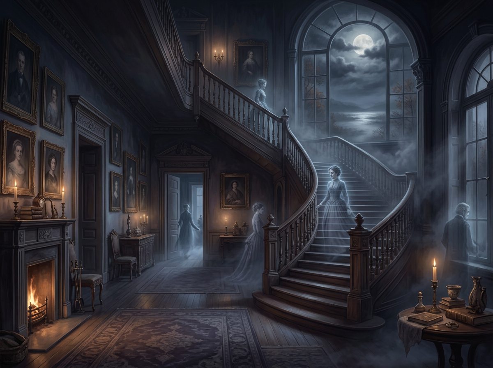

All houses wherein men have lived and died Are haunted houses. Through the open doors The harmless phantoms on their errands glide, With feet that make no sound upon the floors. We meet them at the door-way, on the stair, Along the passages they come and go, Impalpable impressions on the air, A sense of something moving to and fro. There are more guests at table than the hosts Invited; the illuminated hall Is thronged with quiet, inoffensive ghosts, As silent as the pictures on the wall. The stranger at my fireside cannot see The forms I see, nor hear the sounds I hear; He but perceives what is; while unto me All that has been is visible and clear. We have no title-deeds to house or lands; Owners and occupants of earlier dates From graves forgotten stretch their dusty hands, And hold in mortmain still their old estates. The spirit-world around this world of sense Floats like an atmosphere, and everywhere Wafts through these earthly mists and vapours dense A vital breath of more ethereal air. Our little lives are kept in equipoise By opposite attractions and desires; The struggle of the instinct that enjoys, And the more noble instinct that aspires. These perturbations, this perpetual jar Of earthly wants and aspirations high, Come from the influence of an unseen star An undiscovered planet in our sky. And as the moon from some dark gate of cloud Throws o’er the sea a floating bridge of light, Across whose trembling planks our fancies crowd Into the realm of mystery and night,— So from the world of spirits there descends A bridge of light, connecting it with this, O’er whose unsteady floor, that sways and bends, Wander our thoughts above the dark abyss.